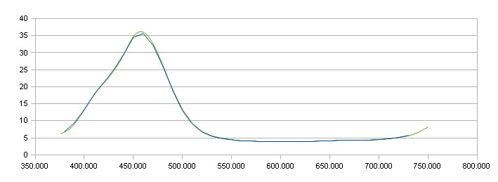

How can I
have confidence in the i1pro Driver ?
A question that has been asked is : "You've
written your own driver for the Eye-One Pro. How can I have
confidence
that the measurements are accurate, and will match those made with
the
original manufacturers driver ?"
This is a quite reasonable question. The following attempts to
answer
it.
Why does Argyll use it's own
i1pro driver ?
Primarily because the Original Manufacturers Driver (OMD) isn't
available for all the platforms that ArgyllCMS supports (Linux in
particular). A side benefit is that it's possible to tweak many of
the
driver parameters for slightly better results and more flexibility.
It
has also helped in understanding the characteristics and limitations
of
such instruments.
Does it match the OMD ?
In principle the behaviour should be very similar. While the Argyll
driver has been written from scratch, it does use exactly the same
calibration values from
inside the instrument, and attempts to use the calibration values
and
process the raw instrument readings in an equivalent manner to that
of
the OMD.
But the proof of the pudding is in the measuring, so to actually
verify
this, the following experiment was conducted:
The Argyll version used was V1.2.0
The OMD is the original version prior to the introduction of the
i1pro2, and hence reporting the native instrument measurements,
rather than applying a conversion to the XRGA standard
The Macbeth 24 patch ColorChecker was used as a sample target. For
each
patch (and the calibration tile), the following steps were
performed:
1) Place the instrument on the calibration tile.
2) Use Argyll spotread to calibrate the Argyll driver.
3) Change drivers to the OMD.
4) Use the OMD to calibrate the instrument.
5) Move the instrument to the patch on the ColorChecker.
6) Read the color using the OMD.
7) Change the back to the Argyll driver.
8) Using the calibration made in step 2), read the color using
Argyll.
Each calibration or reading was performed 15 seconds from the
previous
one, to put the instrument lamp in a repeatable state.
The instrument was kept in exactly the same position for calibration
and patch measurement with the two drivers.
(The whole idea is to reduce all other sources of error, other than
the
driver itself.)
This measurement was repeated just once for each patch + the
calibration tile. This was done in one run, and the readings were
not
specially selected.
Results:
The following D50 L*a*b* values were recorded for each measurement:
A) The OMD internally calculated L*a*b* value
B) The L*a*b* value calculated by Argyll from the OMD
spectral values.
C) The L*a*b* value calculated from the Argyll measured
spectral values.
D) The L*a*b* value calculated from the Argyll
Hi-Resolution mode measured spectral values.
A is compare to B, to
check
that the spectral to standard observer calculations are
equivalent.
The result was an average Delta E (CIE76) of
0.006,
with a maximum of 0.012.
This shows that there is very close agreement in
the
way spectral values are converted to XYZ and L*a*b*.
B is compared to C to
check
that the Argyll driver behaves the same as the OMD.
The result was an average Delta E (CIE76) of
0.028,
with a maximum of 0.051.
This shows that the OMD and Argyll driver are in
close agreement in spectral measurement.
This error is an order of magnitude smaller than
uniformity induced errors typical in the media being measured.
A is compared to C to
check
that the Argyll driver and spectral to XYZ differences don't
compound.
The result was an average
Delta E (CIE76) of 0.026,
with
a maximum of 0.048.
Rather than compounding, any spectral to XYZ
differences tend to cancel
out slightly. This is the bottom
line
experimental difference between
the two drivers. The actual underlying difference may in fact be
less
than this, but it would be necessary to do multiple test runs to
filter out experimental error.
C is compare to D to check
that the Argyll Hi-Resolution mode is behaving reasonably.
The result was an average Delta E (CIE76) of
0.158,
with a maximum of 0.353.
Because the ColorChecker samples have relatively
smooth reflectance spectra, it can be expected that
the normal and Hi-Res mode results should be
fairly
similar. And indeed, this is the case. The biggest
differences are for patches
with the largest spectral transitions in them, which is to be
expected
as the
Hi-Res measurement more
closely follows the spectral shape, while the differences for
spectrally flat
patches is neglegable, since both can follow the
spectral shape well.
Example Yellow-Green Patch, Hi-Res & Normal spectrum:

Conclusions:
The experimental average difference of 0.026
Delta E76 shown above provides evidence that despite using a
completely
different instrument driver to that supplied with the instrument,
the
ArgyllCMS Eye-One pro measurement values have comparable accuracy,
and
can be relied upon to match measurements made using the original
manufactures driver.
Raw Data:
The raw data is available in this spread
sheet.